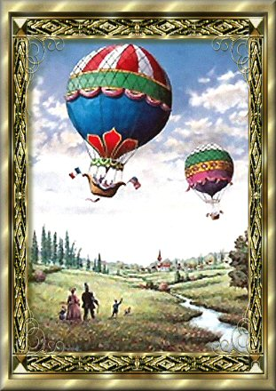

|

Picture by Geof Markovich
Descendants of Amos Morehead
Documented and Compiled by Bonnie Snow
Generation
No. 1
1.
AMOS2
MOREHEAD (DANIEL1)
was born Abt. 1798 in Virginia or Lincoln County, Kentucky, and
died April 10, 1857 in St. Louis, Missouri1. He
married (1) UNKNOWN (SPECULATION on my part) bs Bef. 1823.
He married (2) MARY BOBBITT March 01, 1823 in Campbell County,
Kentucky2, daughter of RANDOLPH BOBBITT and NANCY
MAYS. She was born Abt. 1801 in Bedford County, Virginia.
Notes
for AMOS MOREHEAD:
The
names and ages of Moses Morehead's children was taken from the
1850 Federal Census for Pendleton County, Kentucky.
James
may be a son from a previous marriage of Amos. He might not be
his child. If the marriage record for Amos & Mary is
correct, which I believe it to be, he is not the son of Mary.
There is a close relationship though as in the 1860 Census, Mary
is living in a dwelling between her son, John R. and James.
1850
Pendleton County Census
Enumerated
on the 30th day of October, 1850
Dwelling:
356
Amos
Morehead age 52, male, farmer, real estate value $600.00, born
in Kentucky
Mary
Morehead age 45, female, born in Kentucky
Hannah
Morehead age 21, female, born in Kentucky
John
Morehead age 20, male, born in Kentucky
Daniel
Morehead age 19, born in Kentucky
Matthew
Morehead age 16, male, born in Kentucky
Amos
Morehead age 12, male, born in Kentucky
Richard
Morehead age 11, male, born in Kentucky
America
Morehead age 9, female, born in Kentucky
Mary
Morehead age 7, female, born in Kentucky
Susan
Morehead age 5, female, born in Kentucky
Notes
for MARY BOBBITT:
The
1860 Federal Census for Knoxville, Pendleton County, dwelling
#567, lists Mary Morehead, age 59, widow, born in Virgina, she
is listed as a farmer with $2000.00 as the value of her real
estate and $610.00 as the value of her personal estate. Living
with Mary are the following: Matthew E., age 25, Amos G., age
23, Richard M., age 22, Ann. A., age 20, Mary E., age 18 and
Susan S., age 15. All the children were born in Kentucky. The
son's occupations were listed as farm work. Living in dwelling
#566, is John R. Morehead, age 30, farmer, Narcissus, age 20,
Bersheba K, age 4, and Ashland F, age 2. All born in Kentucky.
Living in dwelling #568, is James Morehead, age 39, farmer, born
in Kentucky, Elizabeth, age 30, Mary J., age 12, Aron, age 10,
Hannah E., age 8, and Charles W., age 4, all born in Kentucky.
I
can not find Mary listed in the 1870 Census.
Child
of AMOS MOREHEAD and UNKNOWN SPECULATION is:
2.
i. JAMES3
MOREHEAD, b. March 1819, Kenton County, Kentucky.
Children
of AMOS MOREHEAD and MARY BOBBITT are:
3.
ii. HANNAH3
MOREHEAD, b. 1829.
4.
iii. JOHN K. MOREHEAD, b. December 15, 1829, Pendleton
County, Kentucky; d. September 01, 1892, Pendleton County,
Kentucky.
iv.
DANIEL MOREHEAD, b. 1831.
v.
MATTHEW E. MOREHEAD, b. 1833.
vi.
MARTHA MOREHEAD, b. 1834.
5.
vii. RICHARD N. MOREHEAD, b. 1839, Pendleton County,
Kentucky.
6.
viii. ANN AMERICA MOREHEAD, b. May 30, 1840, Knoxville,
Pendleton County, Kentucky; d. January 18, 1917, Grant
County, Kentucky.
ix.
MARY JANE MOREHEAD, b. 1843.
x.
SUSAN MOREHEAD, b. 1845.
7.
xi. AMOS MOREHEAD, b. 1837.
Generation
No. 2
2.
JAMES3
MOREHEAD (AMOS2,
DANIEL1)
was born March 1819 in Kenton County, Kentucky. He married
ELIZABETH FRAKES, daughter of WILLIAM FRAKES and NANCY MOORE.
She was born 1831 in Grant, Kentucky.
Children
of JAMES MOREHEAD and ELIZABETH FRAKES are:
8.
i. AARON HOWE4
MOREHEAD, b. December 10, 1850, Pendleton County,
Kentucky; d. November 06, 1928, Aurora, Dearborne County,
Indiana.
9.
ii. MARY JANE MOREHEAD, b. 1850, Pendleton County,
Kentucky.
iii.
HANNAH ELIZABETH MOREHEAD3,
b. March 09, 1854; m. JAMES A. CLEMENTS/CLEMONS, February
23, 1876, Grant County, Kentucky; b. November 1855, Clark
County, Kentucky.
iv.
CHARLES WILLIAM MOREHEAD, b. February 25, 1856, Pendleton
County, Kentucky4; m. MARY E. SIMPSON, October
28, 1880, Pendleton County, Kentucky5; b. July
1861, Kentucky.
v.
SARAH A. MOREHEAD, b. 1859; m. JAMES A. ZARNES, October
12, 1878, Pendleton County, Kentucky; b. October 1855,
Pendleton County, Kentucky.
10.
vi. HENRIETTA MOREHEAD, b. 1860.
11.
vii. JAMES MOREHEAD, b. January 1866, Grant County,
Kentucky; d. 1930, Dearborn, Indiana.
12.
viii. LOUISA MOREHEAD, b. December 25, 1868, Grant County,
Kentucky; d. July 31, 1943, Grant County, Kentucky.
3.
HANNAH3
MOREHEAD (AMOS2,
DANIEL1)
was born 1829. She married CHARLES J. NORTON November 15, 1855
in Grant County, Kentucky.
Children
of HANNAH MOREHEAD and CHARLES NORTON are:
i.
PRYER NEWTON4
NORTON, b. April 19, 1859, Pendleton County, Kentucky6;
d. May 04, 1928.
13.
ii. MARY E. NORTON, b. May 04, 1857; d. December 10, 1948,
Grant County, Kentucky.
iii.
GEORGE D. NORTON.
iv.
ELLA NORTON.
v.
LEWIS NORTON.
4.
JOHN K.3
MOREHEAD (AMOS2,
DANIEL1)
was born December 15, 1829 in Pendleton County, Kentucky, and
died September 01, 1892 in Pendleton County, Kentucky. He
married NARCISSA VICE July 12, 1855 in Grant County, Kentucky,
daughter of PRESLEY VICE and SARAH DESKINS. She was born October
20, 1840 in Grant County, Kentucky, and died June 21, 1875 in
Pendleton County, Kentucky7.
Notes
for JOHN K. MOREHEAD:
1892
Grant County Newspaper Abstracts
September
8, 1892
Suicide
by hanging on a peach tree in his own yard, J. K. MOREHEAD of
near Knoxville, Pendleton County, prosperous and substantial
farmer, last Thursday night [September 1, 1892]; for week or two
before he had been drinking excessively and gaming; leaves
children and a wife he had not lived with for several years.
September
22, 1892
Resolutions
on death of John K. MOREHEAD who died September 1, 1892, by
taking his own life by hanging himself. Was a member of
Knoxville Lodge, 554, F. & A.M.
Children
of JOHN MOREHEAD and NARCISSA VICE are:
i.
MARY S.4
MOREHEAD, b. Pendleton County, Kentucky; m. WILLIAM E.
TEWELL, April 27, 1882, Pendleton County, Kentucky.
14.
ii. BERSHEBA MOREHEAD, b. Abt. 1857.
iii.
ASHLAND F. MOREHEAD, b. March 25, 1858, Pendleton County,
Kentucky8; d. March 27, 1884, Pendleton County,
Kentucky.
15.
iv. JAMES MOREHEAD, b. March 1865.
16.
v. JOSEPH MOREHEAD, b. November 1866, Pendleton County,
Kentucky; d. 1903, Pendleton County, Kentucky.
vi.
JOHN E. MOREHEAD, b. 1868, Pendleton County, Kentucky; d.
Pendleton County, Kentucky.
17.
vii. WILLIAM PRESLEY MOREHEAD, b. July 1870; d. December
23, 1933, Kentucky.
18.
viii. MAGGIE MOREHEAD, b. May 06, 1872, Knoxville,
Pendleton County, Kentucky; d. August 25, 1949, Grant
County, Kentucky.
ix.
FANNY MOREHEAD, b. April 05, 1874, Pendleton County,
Kentucky; m. JAKE LANDRUM.
5.
RICHARD N.3
MOREHEAD (AMOS2,
DANIEL1)
was born 1839 in Pendleton County, Kentucky. He married ROSETTA
ASHCRAFT March 26, 1868 in Grant County, Kentucky9,
daughter of ROBERT ASHCRAFT and MARTHA TURNER. She was born Abt.
1850 in Grant County, Kentucky.
Notes
for RICHARD N. MOREHEAD:
From
the Grant Co. Marriage Bonds and Marriages Books for the period
of 1866-1875: Bond Book 1867-1870, p. 70. Morehead, R.N. and
Roseta Ashcraft. Bond date: 25 Mar 1868. Bondsman: Amos A. (X)
Blackburn. Consent of R.W. Ashcraft for the marriage of "my
daughter Roseta Ashcraft. She being under 21 years of age this
23 March 1868." Attest: J.M. Vice, and Amos A. Blackburn.
Groom of Pendleton Co., KY, age 29 yrs., 1st marriage, farmer,
born Pendleton Co., KY. Father born Lincoln Co., KY. Mother born
in VA. Bride of Grant Co., age 19 yrs., 1st marriage, born Grant
Co., KY. Father born Grant Co., KY, and mother born in Kenton
Co., KY. Married 26 March 1868 at "Acre".
From
a second record: marriage date 26 Mar 1868 at the residence of
Roseta Ashcraft by M.M. Arnold. Witnesses: A. Blackburn, J.
Morehead.
Children
of RICHARD MOREHEAD and ROSETTA ASHCRAFT are:
19.
i. IDA4
MOREHEAD, b. February 28, 1873, Grant County, Kentucky; d.
February 25, 1953, Campbell County, Kentucky.
20.
ii. EDGAR MOREHEAD.
21.
iii. ODEN MOREHEAD.
6.
ANN AMERICA3
MOREHEAD (AMOS2,
DANIEL1)
was born May 30, 1840 in Knoxville, Pendleton County, Kentucky,
and died January 18, 1917 in Grant County, Kentucky. She married
JAMES MILTON VICE April 18, 1861 in Pendleton County, Kentucky.
He was born April 16, 1832 in Bath County, Kentucky, and died
April 12, 1904 in Grant County, Kentucky.
Notes
for JAMES MILTON VICE:
Vice,
James M and Elizabeth J. Clark
Bond
Date: 11 Sept 1855 Bonds Wm. Clark
Bond
Book 1847-1855 page 229 LDS micorfilm only
Marriage
Date: 2 marriage book 1854-1890
James
M. Vice was married to Elizabeth J. Clark by Wm. H. s
Sipple
on 19 Sept 1855
Witnesses:
Wm M. Ashcraft, Elanor Ashcraft
Sutton
Register:
James
Vice of Grant Co Ky age not given, single born Grant Co., KY
Elizabeth
Jane Clark of Grant Co, Ky age not given, single born Grant Co.,
Ky
Married
19, Sept 1855
Children
of ANN MOREHEAD and JAMES VICE are:
i.
CLAUDE4
VICE.
ii.
RUTH VICE, b. October 12, 1861, Dry Ridge, Grant County,
Kentucky; d. February 12, 1934, Montgomery County, Ohio.
iii.
JASPER CLAYTON VICE, b. December 07, 1862, Dry Ridge,
Grant County, Kentucky; d. February 19, 1917, Pendleton
County, Kentucky.
22.
iv. ELIZABETH JANE "ELIZA" VICE, b. June 23,
1864, Dry Ridge, Grant County, Kentucky; d. June 04, 1928,
Hughes Precinct, Pendleton County, Kentucky.
v.
FRANKLIN PIERCE VICE, b. November 02, 1866, Dry Ridge,
Grant County, Kentucky; d. April 13, 1963, Williamstown,
Grant County, Kentucky.
vi.
MOLLIE VICE, b. February 06, 1869, Dry Ridge, Grant
County, Kentucky; d. June 13, 1916, Near Dry Ridge, Grant
County, Kentucky.
vii.
BRETT THORPE VICE, b. July 16, 1870, Dry Ridge, Grant
County, Kentucky; d. May 17, 1942, Harrison Township,
Preble County, Ohio.
viii.
EDWIN CURTIS VICE, b. May 10, 1872, Dry Ridge, Grant
County, Kentucky; d. August 19, 1873.
ix.
DALTON VICE, b. June 07, 1874, Pendleton County, Kentucky;
d. January 10, 1875.
23.
x. SALLY FENTON VICE, b. March 21, 1876, Dry Ridge, Grant
County, Kentucky; d. January 06, 1952, Williamstown, Grant
County, Kentucky.
xi.
HOMER LEWIS VICE, b. June 10, 1879, Dry Ridge, Grant
County, Kentucky; d. February 07, 1908, Grant County,
Kentucky.
24.
xii. NANNIE ELOISE VICE, b. July 16, 1881, Louisville,
Jefferson County, Kentucky; d. March 18, 1960, Hawthorne,
Los Angels County, California.
7.
AMOS3
MOREHEAD (AMOS2,
DANIEL1)
was born 1837. He married MARGARET DELANEY. She was born 1844 in
Mason County, Kentucky.
Children
of AMOS MOREHEAD and MARGARET DELANEY are:
25.
i. JOHN L.4
MOREHEAD, b. 1865.
26.
ii. RICHARD C. MOREHEAD, b. 1866.
iii.
ROSA A. MOREHEAD, b. 1868.
iv.
FESTUS MOREHEAD, b. 1871.
v.
MISSOURI MOREHEAD, b. 1873.
vi.
CLARA MOREHEAD, b. 1874.
vii.
OTERA MOREHEAD, b. 1878.
Generation
No. 3
8.
AARON HOWE4
MOREHEAD (JAMES3,
AMOS2,
DANIEL1)
was born December 10, 1850 in Pendleton County, Kentucky, and
died November 06, 1928 in Aurora, Dearborne County, Indiana. He
married (1) LOUISA JANE ADAMS November 30, 1870 in Grant County,
Kentucky10. He married (2) CAROLINE NORTON July 21,
1878 in Willianstown, Grant County, Kentucky, daughter of HIRAM
NORTON and LYDIA ASHCRAFT. She was born April 12, 1849 in Dry
Ridge, Grant County, Kentucky, and died October 31, 1900 in
Grant County, Kentucky.
Notes
for CAROLINE NORTON:
Caroline
is buried in Mt. Carmel Baptist Church Cemetery, Grant County,
Kentucky.
Children
of AARON MOREHEAD and CAROLINE NORTON are:
i.
ELIZABETH5
MOREHEAD, b. October 30, 1883, Dry Ridge, Grant County,
Kentucky; d. March 14, 1966, Lawrenceburg, Dearborn
County, Indiana; m. (1) CLARENCE FRANKLIN; m. (2) HENRY
MORTON HARRELL, December 31, 1910, Lawrenceburg, Dearborn
County, Indiana.
ii.
JOHN MOREHEAD, b. March 23, 1881, Grant County, Kentucky;
d. June 24, 1937, Aurora, Dearborne County, Indiana; m.
CLARA WHALEY, January 01, 1901; b. January 1885,
Crittenden, Grant County, Kentucky.
iii.
WALTER MOREHEAD, b. June 23, 1886, Williamstown, Grant
County, Kentucky; d. January 07, 1970, Aurora, Dearborne
County, Indiana; m. MYRTLE MARTIN, December 19, 1906,
Lawrenceburg, Dearborn County, Indiana; b. April 04, 1891,
Grant County, Kentucky; d. September 30, 1975, Aurora,
Dearborne County, Indiana.
iv.
LOLA BLAINE MOREHEAD, b. March 08, 1895, Williamstown,
Grant County, Kentucky; d. December 24, 1978, Covington,
Kenton County, Kentucky; m. CLIFFORD LINDLEY.
v.
CARRIE MOREHEAD, b. 1897.
9.
MARY JANE4
MOREHEAD (JAMES3,
AMOS2,
DANIEL1)
was born 1850 in Pendleton County, Kentucky. She married (1) S.
H. BILLITER May 29, 1873 in Grant County, Kentucky11.
He was born 1844 in Pendleton County, Kentucky. She married (2)
ANDERSON A. MEDLEY April 25, 1876. He was born 1845 in
Tennessee.
Child
of MARY MOREHEAD and ANDERSON MEDLEY is:
i.
ANN E.5
MEDLEY, b. 1879.
10.
HENRIETTA4
MOREHEAD (JAMES3,
AMOS2,
DANIEL1)
was born 1860. She married JOHN BISHOP April 23, 1884 in Grant
County, Kentucky.
Child
of HENRIETTA MOREHEAD and JOHN BISHOP is:
i.
JOHN5
BISHOP, b. July 1884.
11.
JAMES4
MOREHEAD (JAMES3,
AMOS2,
DANIEL1)
was born January 1866 in Grant County, Kentucky, and died 1930
in Dearborn, Indiana. He married ANNIE SIMPSON February 14,
1889. She was born November 1872 in Kentucky, and died February
25, 1950 in Dearborn, Indiana.
Children
of JAMES MOREHEAD and ANNIE SIMPSON are:
i.
LESLIE5
MOREHEAD, b. August 1891, Grant County, Kentucky; d.
November 09, 1960, Madison, Jefferson County, Indiana.
ii.
LEONA MOREHEAD, b. October 1893, Grant County, Kentucky;
d. July 03, 1964, Dearborn County, Indiana; m. WILLIAM
RICHARD VASTINE; b. Abt. 1866, Dearborn County, Indiana;
d. March 09, 1959, Dearborn County, Indiana.
iii.
IDA MOREHEAD, b. March 1897; m. RAY WITHERED.
12.
LOUISA4
MOREHEAD (JAMES3,
AMOS2,
DANIEL1)
was born December 25, 1868 in Grant County, Kentucky, and died
July 31, 1943 in Grant County, Kentucky. She married ALBERT
CLARK. He was born October 28, 1876 in Grant County, Kentucky,
and died May 12, 1958 in Kentucky.
Children
of LOUISA MOREHEAD and ALBERT CLARK are:
i.
LETHA5
CLARK, b. August 1898; d. 1909, Grant County, Kentucky.
ii.
ADA CLARK, b. September 1899.
iii.
ROY LEE CLARK, b. 1902.
13.
MARY E.4
NORTON (HANNAH3
MOREHEAD, AMOS2,
DANIEL1)
was born May 04, 1857, and died December 10, 1948 in Grant
County, Kentucky. She married ROBERT LEE ADAMS July 02, 1885,
son of ROBERT ADAMS and ELIZABETH MENIFEE. He was born May 13,
1864, and died July 13, 1932 in Grant County, Kentucky.
Children
of MARY NORTON and ROBERT ADAMS are:
i.
GRIFFIN5
ADAMS, b. December 03, 1888.
ii.
PEARL LEE ADAMS, b. 1889.
iii.
CARL BERNARD ADAMS, b. November 05, 1891.
iv.
RUSSELL ROBERT ADAMS, b. November 24, 1898.
v.
ERNEST ADAMS, b. August 30, 1901.
vi.
HUGH ADAMS.
vii.
CHARLES ADAMS.
14.
BERSHEBA4
MOREHEAD (JOHN K.3,
AMOS2,
DANIEL1)
was born Abt. 1857. She married F. D. SIMPSON January 25, 1874
in Pendleton County, Kentucky.
Child
of BERSHEBA MOREHEAD and F. SIMPSON is:
i.
GRACE5
SIMPSON.
15.
JAMES4
MOREHEAD (JOHN K.3,
AMOS2,
DANIEL1)
was born March 1865. He married GEORGIA ANN STEPHENSON. She was
born July 1857.
Children
of JAMES MOREHEAD and GEORGIA STEPHENSON are:
i.
ANNIE5
MOREHEAD, b. November 1894.
ii.
FANNY MOREHEAD.
16.
JOSEPH4
MOREHEAD (JOHN K.3,
AMOS2,
DANIEL1)
was born November 1866 in Pendleton County, Kentucky, and died
1903 in Pendleton County, Kentucky. He married IDA BETHEL July
17, 1895 in Pendleton County, Kentucky, daughter of R. BETHEL
and NANCY. She was born September 1870 in Pendleton County,
Kentucky.
Notes
for JOSEPH MOREHEAD:
1895
Grant County Newspaper Apstracts
July
25, 1895
Joseph
MOREHEAD and Miss Ida BETHEL were married in the Baptist Church
at Knoxville, this county, last Wednesday, by Rev. G. W. HILL;
bride is daughter of Dr. R. L. BETHEL.
__________________________________________________________________________________
December
25 ,1902:
Dry
Ridge News: Last Sunday Joe MOREHEAD died suddenly at home,
alone with his three little children, while his wife ran 3/4
mile to summon a doctor at her neighbor's house, Mr. VICE;
funeral was Tuesday at Knoxville Baptist Church.
Children
of JOSEPH MOREHEAD and IDA BETHEL are:
i.
CLINE5
MOREHEAD, b. July 15, 1898, Pendleton County, Kentucky12.
ii.
CECIL B. MOREHEAD13,
b. June 14, 1897, Portland, Pendleton County, Kentucky.
17.
WILLIAM PRESLEY4
MOREHEAD (JOHN K.3,
AMOS2,
DANIEL1)
was born July 1870, and died December 23, 1933 in Kentucky. He
married SARAH ANN DANIELS. She was born September 1873.
Children
of WILLIAM MOREHEAD and SARAH DANIELS are:
i.
VIOLA ETHEL5
MOREHEAD, b. February 14, 1893; m. CLARENCE NORTON,
December 26, 1909.
ii.
FANNY CLAUDIA MOREHEAD, b. September 18, 1894; m. JAMES
IVAN VICE, July 07, 1912.
iii.
HAZEL GRACE MOREHEAD, b. October 28, 1896; d. January 07,
1928; m. JOHN RUSSELL LANDRUM, March 26, 1921.
iv.
JOHN WILLIAM MCKINLEY MOREHEAD, b. September 17, 1900,
Knoxville, Pendleton County, Kentucky; d. January 05,
1949, Knoxville, Pendleton County, Kentucky; m. AUDREY
FERN ASHCRAFT, March 09, 1919, Grant County, Kentucky; b.
October 24, 1899, Dry Ridge, Grant County, Kentucky; d.
May 1972.
18.
MAGGIE4
MOREHEAD (JOHN K.3,
AMOS2,
DANIEL1)
was born May 06, 1872 in Knoxville, Pendleton County, Kentucky,
and died August 25, 1949 in Grant County, Kentucky. She married
HARRY ELLIOTT.
Children
of MAGGIE MOREHEAD and HARRY ELLIOTT are:
i.
LEVONA5
ELLIOTT14,
b. May 02, 1898.
ii.
MABEL K. ELLIOTT.
iii.
ESTHER ELLIOTT.
iv.
SYLVIA ELLIOTT.
19.
IDA4
MOREHEAD (RICHARD N.3,
AMOS2,
DANIEL1)
was born February 28, 1873 in Grant County, Kentucky, and died
February 25, 1953 in Campbell County, Kentucky. She married
WILLIAM RILEY HALE.
Child
of IDA MOREHEAD and WILLIAM HALE is:
i.
DAUGHTER5
HALE15,
b. December 06, 1900.
20.
EDGAR4
MOREHEAD (RICHARD N.3,
AMOS2,
DANIEL1)
He married GERTIE.
Children
of EDGAR MOREHEAD and GERTIE are:
i.
SADIE5
MOREHEAD.
Notes
for SADIE MOREHEAD:
Sadie
Louella MOOREHEAD
BORN:
APR 1898,
DIED:
ABT. 1959,
BURIED:
,
MARRIED:
Raymond G. GOODRIDGE, BEF. 1918,
CHILDREN:
Manilus
Raymond GOODRIDGE
MARRIED:
Henry M. HUMPHREY, 3 OCT 1925, Boone Co. Kentucky
CHILDREN:
Marion
HUMPHREY
Lavinia
Lee HUMPHREY
William
R. HUMPHREY
Gertrude
J. HUMPHREY
Judith
L. HUMPHREY
ii.
ESSIE MOREHEAD.
Notes
for ESSIE MOREHEAD:
Essie
B. MOOREHEAD
BORN:
JUN 1895, Ohio
DIED:
,
BURIED:
,
MARRIED:
Thomas H . GOODRIDGE, BEF. 1918,
CHILDREN:
Kathryn
GOODRIDGE
Betty
L. GOODRIDGE
Esther
D. GOODRIDGE
Alice
C. GOODRIDGE
Edgar
A. GOODRIDGE
iii.
ROBERT MOREHEAD.
Notes
for ROBERT MOREHEAD:
Robert
N. MOOREHEAD
BORN:
24 APR 1910, Boone Co. Kentucky
DIED:
2 JUN 1969, Kenton Co., Kentucky
BURIED:
,
MARRIED:
Irene POOLE, BEF. 1941,
iv.
EDGAR MOREHEAD.
Notes
for EDGAR MOREHEAD:
Edgar
E. MOOREHEAD
BORN:
18 MAR 1902, Kentucky
DIED:
28 APR 1976, Kentucky
BURIED:
,
MARRIED:
Elizabeth M. GRIMM, 1 OCT 1924, Campbell Co., Kentucky
21.
ODEN4
MOREHEAD (RICHARD N.3,
AMOS2,
DANIEL1)
Notes
for ODEN MOREHEAD:
Oden
MOOREHEAD
BORN:
AUG 1870,
DIED:
,
BURIED:
,
MARRIED:
Rena ?, ABT. 1892,
CHILDREN:
Almeda
MOOREHEAD
Roe
MOOREHEAD
Children
of ODEN MOREHEAD are:
i.
ALMEDA5
MOREHEAD, b. April 1893.
ii.
ROE MOREHEAD, b. Abt. 1895.
22.
ELIZABETH JANE "ELIZA"4
VICE (ANN AMERICA3
MOREHEAD, AMOS2,
DANIEL1)
was born June 23, 1864 in Dry Ridge, Grant County, Kentucky, and
died June 04, 1928 in Hughes Precinct, Pendleton County,
Kentucky. She married GRANDVILLE A. DRAPER, son of MARTIN DRAPER
and LOUISANA RATLIFF. He was born May 10, 1861, and died June
18, 1911 in Grant County, Kentucky.
Notes
for GRANDVILLE A. DRAPER:
Death
Certificate:
Draper,
Grandville Alvin
Kentucky
#14802
Born:
May 10, 1861, Pendleton Co.
Died:
June 18, 1911, Grant Co.
Cause
of Death: Carbolic acid believed to have been taken with
suicidal intent.
Buried:
Mt. Carmel Cemetery - June 20, 1911
Race:
White
Marital
Status: Married
Father:
Martin M. Draper, born Ky.
Mother:
Lusia A. Ratliff, born Ky.
Informant:
Mrs. Eliza Draper, Williamstown, Ky.
Child
of ELIZABETH VICE and GRANDVILLE DRAPER is:
i.
ALLEN E.5
DRAPER16,
b. June 24, 1898.
23.
SALLY FENTON4
VICE (ANN AMERICA3
MOREHEAD, AMOS2,
DANIEL1)
was born March 21, 1876 in Dry Ridge, Grant County, Kentucky,
and died January 06, 1952 in Williamstown, Grant County,
Kentucky. She married JAMES DUNCAN.
Child
of SALLY VICE and JAMES DUNCAN is:
i.
CHARLES5
DUNCAN, m. GOLDIE MAY ASHCRAFT; d. February 21, 1983.
Notes
for GOLDIE MAY ASHCRAFT:
Mrs.
Goldie Mae Ashcraft Duncan, 85, of Covington, Ky., died
February 21, 1983 at Ridgeview Nursing Home. The widow of
Charlie Duncan, she was a native of Grant County and
member of Williamstown Baptist Church. Survivors are a
daughter, Mrs. Lula Fenton Collins of Covington, a
daughter-in-law, Mrs. Marie Duncan of Williamstown;
brother, Raymond Ashcraft of Falmouth; 9 grandchildren and
3 great-grandchildren. Burial in Williamstown Cemetery,
Williamstown, Ky.
The
Williamstown Cemetery - A History of its Inhabitants
Published
by the Grant County Ky Historical Society, 1987
24.
NANNIE ELOISE4
VICE (ANN AMERICA3
MOREHEAD, AMOS2,
DANIEL1)
was born July 16, 1881 in Louisville, Jefferson County,
Kentucky, and died March 18, 1960 in Hawthorne, Los Angels
County, California. She married RUFUS A. CUNNINGHAM February 27,
1907 in Grant County, Kentucky. He was born August 08, 1877 in
Willamstown, Grant County, Kentucky, and died Unknown in
Unknown.
Children
of NANNIE VICE and RUFUS CUNNINGHAM are:
i.
ELOISE NANNIE5
CUNNINGHAM, b. December 09, 1907; d. May 1992; m. (1)
LESTER KINCAID; m. (2) ELMER BROOKS.
ii.
GALE CURTIS CUNNINGHAM, b. June 17, 1915, Dayton,
Montgomery County, Ohio; d. November 01, 1988, Sacremento,
California.
25.
JOHN L.4
MOREHEAD (AMOS3,
AMOS2,
DANIEL1)
was born 1865. He married NANNIE SOUTHARD December 20, 1888 in
Pendleton County, Kentucky17.
Children
of JOHN MOREHEAD and NANNIE SOUTHARD are:
i.
RICHARD F.5
MOREHEAD.
ii.
OLLIE M. MOREHEAD.
iii.
ELLA MOREHEAD.
iv.
LEWIS MOREHEAD.
v.
JAMES MOREHEAD.
26.
RICHARD C.4
MOREHEAD (AMOS3,
AMOS2,
DANIEL1)
was born 1866. He married ADDIE NORTHCUTT February 12, 1890 in
Grant County, Kentucky. She was born November 1865 in Grant
County, Kentucky.
Children
of RICHARD MOREHEAD and ADDIE NORTHCUTT are:
i.
JAMES J.5
MOREHEAD.
ii.
ROXIE C. MOREHEAD.
iii.
ANNIE L. MOREHEAD.
iv.
ADDIE C. MOREHEAD.
v.
HAZEL MOREHEAD.
vi.
LIVING MOREHEAD.
Endnotes
1.
Pendleton Co. Death Records, Morehead, Amos 60 m Pendleton Co.
Virginia Morehead, Daniel & Sarah St. Louis, Mo. 1857 Apr 10
cholera.
2.
Campbell County Marriage Records.
3.
GRANT COUNTY, KENTUCKY BIRTH RECORDS, Certificate # 11.
4.
Pendleton County Births 1856.
5.
Pendleton Co. Marriage Index.
6.
Pendleton County Births 1859.
7.
Pendleton County Deaths, Narcisus was age 35, she died
"confined" (child birth). A daughter, not named died
June 24, 1875 at the age of three days. Narcisus parents were
Presley and Sallie Vice.
8.
Pendleton County Births 1858.
9.
Index To Marriages - Grant County, Kentucky, Book 1854 - 1890,
Page 62.
10.
GRANT COUNTY, KENTUCKY MARRIAGES AND BONDS, Bond Book
1870-1873., Consent of J. R. (X) Morehead for the marriage
"of my son Aaron H. Morehead to marry Miss Louisa Jane
Adams".
11.
GRANT COUNTY, KENTUCKY MARRIAGES AND BONDS, Bond Book 1870-1873,
page 420., Married at the residence of the bride's father, James
Morehead.
12.
Pendleton County Births 1898.
13.
Pendleton County Births 1897, Family was living in Portland,
Pendleton County, Kentucky.
14.
Pendleton County Births 1898.
15.
GRANT COUNTY, KENTUCKY BIRTH RECORDS, Certificate # 11, Parents
of Keefer, Kentucky.
16.
Pendleton County 1898 births.
17.
Pendleton County Kentucky Marriage Index.
Home
|